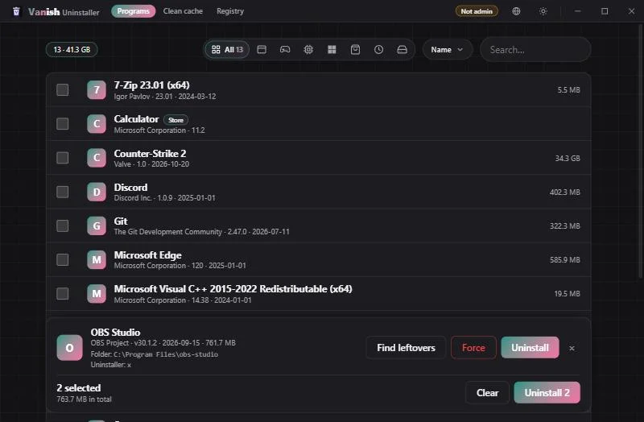
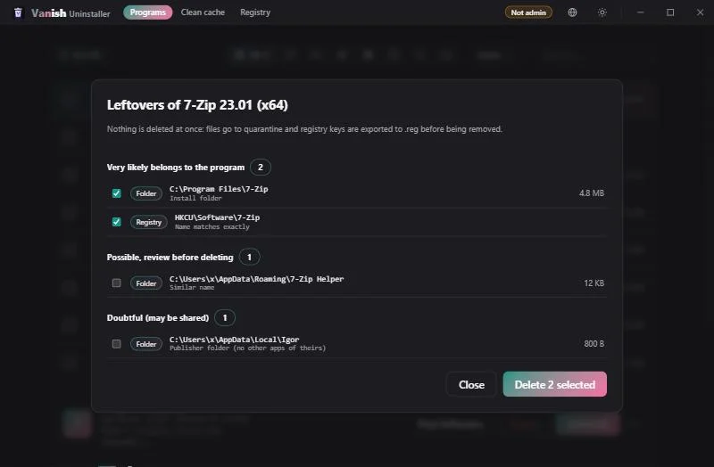
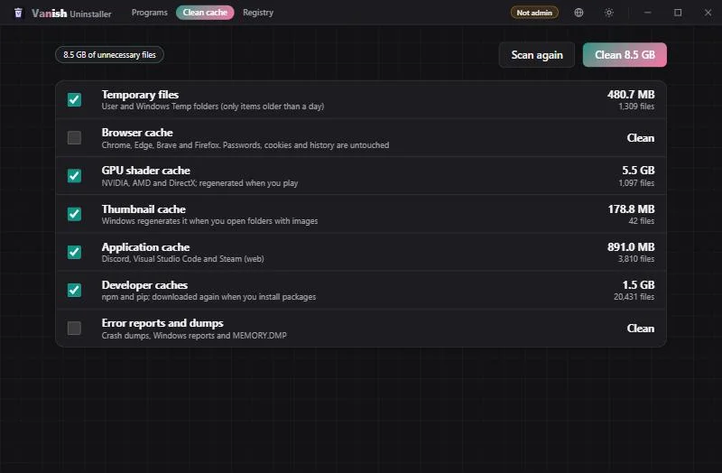

Restos con nivel de confianza
Carpetas, claves, servicios, inicio automático, tareas y reglas del firewall. Solo lo muy probable viene marcado.
Windows 10/11 · Gratis · Licencia MIT
Un desinstalador rápido y sin publicidad que busca lo que cada programa deja atrás y te deja decidir qué borrar. Nada se elimina sin copia de seguridad.
Windows 10/11 · pide permisos de administrador al abrirse · se actualiza solo

Funciones
Pensado para quitar lo que sobra sin llevarse nada que no toca.
Carpetas, claves, servicios, inicio automático, tareas y reglas del firewall. Solo lo muy probable viene marcado.
Los archivos van a cuarentena y cada clave del registro se exporta a un .reg antes de borrarse.
Elige o arrastra una carpeta o archivo y busca todo lo relacionado, aunque no exista desinstalador.
Limpia temporales y cachés, y repara entradas rotas del registro.
Desinstala apps de la Microsoft Store y varios programas seguidos.
Tema claro u oscuro, color de acento, nivel del fondo y seis idiomas.


Instalar
El instalador no tiene asistente en las actualizaciones: se instalan solas.
Baja el instalador o la versión portable desde GitHub.
Windows puede avisar porque no está firmado: Más información → Ejecutar de todas formas.
Comprueba solo si hay una versión nueva y se actualiza con un clic.
Dudas
No. Muestra una lista, lo dudoso va sin marcar y todo pasa por cuarentena y copia del registro.
Para poder tocar claves de HKLM, servicios y carpetas protegidas. Sin ellos funciona, pero con menos alcance.
Sí, la versión instalada. La portable no se actualiza sola.
Sí, sin publicidad y con licencia MIT. El código está en GitHub.